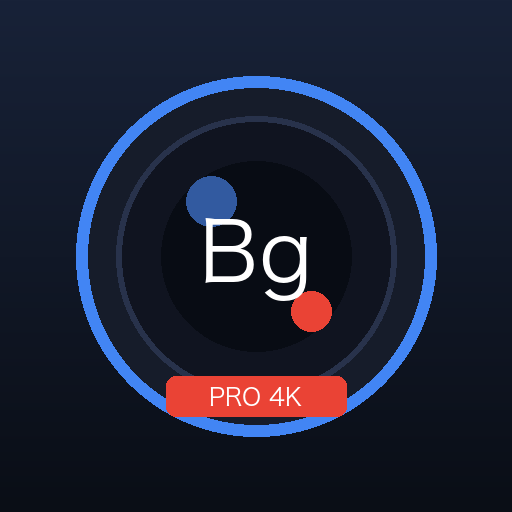

画面オフ・バックグラウンド録画
画面消灯時や他アプリ使用時でも、フォアグラウンドサービスにより途切れずに安定録画。画面点灯による発熱やバッテリー消費を抑えながら長時間の記録が可能です。

Bg (BgRec)Bg（BgRec）は、スマートフォンの画面を消灯した状態（端末ロック中）や、他のアプリを操作している最中でも、安定して動画撮影・音声録音を行えるバックグラウンド専用キャプチャツールです。
Android 対応 · 完全オフライン · 外部送信ゼロ · 広告なし画面消灯時や他アプリ使用時でも、フォアグラウンドサービスにより途切れずに安定録画。画面点灯による発熱やバッテリー消費を抑えながら長時間の記録が可能です。
カメラを起動せず音声のみを記録する省電力モード（AAC 48kHz）。商談の議事録、講義、日常のボイスメモをスマホを伏せたままクリアに記録できます。
ポケットの中のBluetoothボタンやMacroDroidなどの外部連携から、画面を点灯することなく即座に録画・録音の開始・停止を行えます。
撮影・録音データの外部送信や広告SDKは一切ありません。
撮影された動画・写真および録音データは、端末内のアプリ専用保護領域にのみ安全に保存されます。開発者サーバーへの自動送信機能はなく、第三者トラッキングツールも組み込まれていません。Google Play決済情報はGoogle Playによって安全に管理されます。
提供者は estechfy（Estechfy合同会社） です。ご質問・不具合のご報告・ご意見は下記窓口までご連絡ください。
サポート窓口：support@estechfy.com